Zalman CNPS6000-Cu & CNPS7000B-Cu
Kaip visi žinote, šiais laikais kompiuteriai tobulėja vos ne kiekvieną dieną. Komponentai darosi vis galingesni ir galingesni, tačiau, kaip bebūtų gaila, šie technologiniai laimėjimai neapsieina be gan nemalonių trukumų. Vienas iš jų yra karščio išsiskyrimas... Tai ypač aktualu naujų super galingų procesorių (dažniausiai AMD) savininkams, OC maniakams ir šiaip paranojikams. Vienintelis karščio problemos sprendimas, šiuo atveju, yra "didelis radiatorius ir galingas ventiliatorius" :)
Taigi, visų Jūsų teismui pristatau bene pačius geriausius ir įspūdingiausius aušintuvus pasaulyje - Zalman.
Pirmas įspūdis
Vos pamatęs šiuos gražuolius labai nustebau. Žinoma, man jų išvaizda nebuvo naujiena, bet vien žvilgantis radiatoriaus pagrindo atspindys pro pakuotės plastiką privertė susimąstyti :) Kadangi pirmą kartą savo rankose laikiau tokio aukšto lygio aušintuvus, labai nustebau dėl jų formos, dydžio ir svorio. Na, bet, kaip sakoma, geriau vieną kartą pamatyti, nei tūkstantį išgirsti:
Zalman CNPS6000-Cu
Kadangi šie aušintuvai panašūs tik vario kokybe ir bendru gamintoju, pabandysiu apžvelgti juos atskirai. Pradėsiu nuo pigesnio ir paprastesnio CNPS6000-Cu modelio... Manau, jums tikrai bus įdomu pamatyti, kas "gyvena" šio aušintuvo pakuotėje:
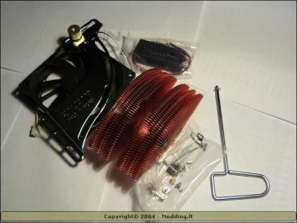 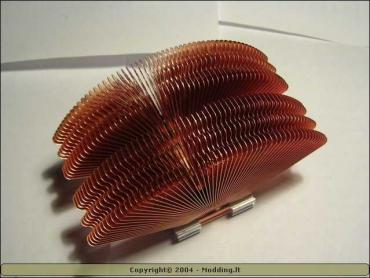 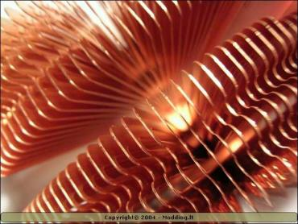 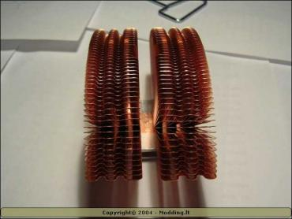 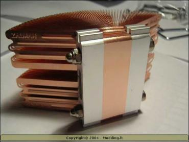 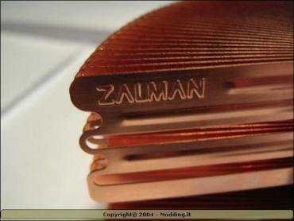 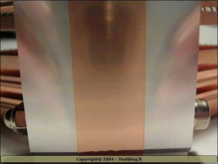 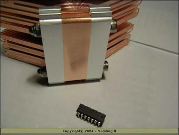 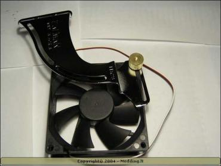 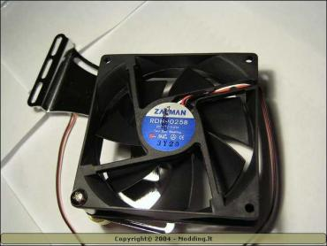 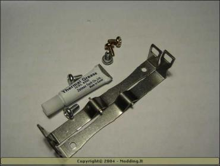 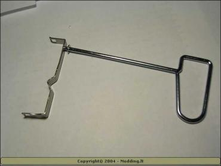 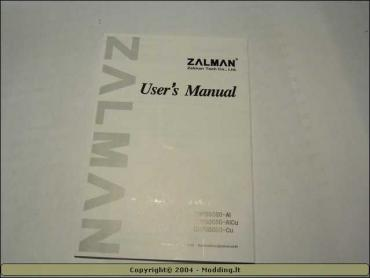 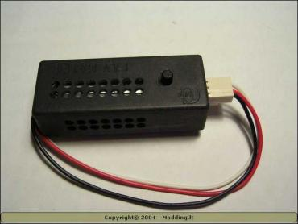
Kaip puikiai matote iš aukščiau pateiktų nuotraukų, minimalistai kinai į šio aušintuvo pakuotę sugebėjo "sukimšti" tikrai nemažai:
- Zalman CNPS6000-Cu radiatorių
- 92x92x25mm Zalman RDH2025B ypač tylus aušintuvą su spec. laikikliu
- Aušintuvo greičio reguliatorių (FAN MATE 1)
- 5 varžtukus
- Zalman termo pastą
- Radiatoriaus montavimo "klips'us"
- Spec. radiatoriaus tvirtinimo įrankį (Clip Mate)
- Manualą
Techniniai parametrai
Radiatorius:| Dydis | 95~110 X 63 X 65 mm |
| Svoris | 462g |
| Metalas | Varis |
| Paviršiaus plotas | 2600~2900 cm^2 |
| Šiluminis pasipriešinimas | 0.23 °C/W ~ 0.31 °C/W |
Aušintuvas:
| Dydis | 92 X 92 mm |
| Svoris | 88g |
| Greitis | 1,350 ~ 2,600 rpm |
| Garsumas | 18.0 ~ 27.5 dB |
Aušintuvo greičio reguliatorius:
| Dydis | 65 X 23 X 21 mm |
| Svoris | 20g |
| Štampa | 5V ~ 11V ± 2% |
| Galia | <6W |
Suderinamumas:
|
VIA & INTEL Processor (Socket 370) |
Celeron |
Pentium III |
VIA C3 |
| Tylus rėžimas (1300RPM) |
Visi dažniai |
||
| Normalus rėžimas (2500RPM) |
Visi dažniai |
||
|
AMD Processor (Socket 462) |
Duron |
Athlon T-Bird |
Athlon XP (Palomino) |
Athlon XP (T-Bred) |
Athlon XP (Barton) |
| Tylus rėžimas (1300RPM) |
Visi daþniai |
Iki 2700+ | Iki 2800+ | ||
| Normalus rėžimas (2500RPM) |
Visi dažniai |
||||
Montavimas
Vos pamatęs šį radiatorių, supratau, kad su montavimu tikrai iškils problemų. Vien jo dydis kėlė įtarimų, kurie labai greitai pasitvirtino: šis radiatorius (tiesą sakant, nei šis, nei 7000cu) netilpo i mano "midi" tipo Codegen korpusą... Žinoma nėra padėties be išeities, bet vis tiek rekomenduočiau, jei ruošiaties pirkti kurį nors iš Zalman kūrinių tvirtai įsitikinti, ar jis tilps į jūsų korpusą.
Taigi, vėl prie montavimo.. Manau visi žinote, pagrindinius radiatoriaus montavimo etapus: seno radiatoriaus nuėmimas, senos termo pastos nuvalymas nuo CPU, naujos termo pastos užtepimas, naujo radiatoriaus pastatymas ir pritvirtinimas.. Suprasdamas, kad dauguma šių "žingsnių" visiems tikrai yra gerai žinomi, apie juos nekalbėsiu. Tiesiog patarsiu atidžiai perskaityti prie gaminio pridėtą instrukciją, ir pažiūrėti šį flash filmuką.
Zalman CNPS7000B-Cu
Manau, jau iš pirmų šio aprašymo nuotraukų supratoee, kad šie aušintuvai labai skirtingi. Net neišpakavęs antrojo (CNPS7000B-C) aušintuvo, žinojau, kad manęs laukiai didelis nustebimas.. Nieko nelaukdamas rodau, kas "gyvena" šio nuostabaus aušintuvo pakuotėje:
Šio aušintuvo pakuotėje visko dar daugiau nei CNPS6000-Cu.. Tai matosi net plika akimi :) :
- CNPS7000B-Cu aušintuvas
- Aušintuvo greičio reguliatorius (FAN MATE 2)
- 8 varžtukai
- Zalman firminis lipdukas (case badge)
- 26 popierinės poveržlės
- Socket A tvirtinimo detalės
- Socket 754/939/940 tvirtinimo detalės (apsauginė plokštelė ir 2 varžtukai)
- Socket 478 tvirtinimo detalės
- Zalman termo pasta
- Išsamus manualas
Privalomam pasigerėjimui, pateiksiu keliais CNPS7000B-Cu aušintuvo fotografijas:
Techniniai parametrai
Radiatorius:| Dydis | 109 x 109 x 62 mm |
| Svoris | 773g |
| Metalas | Varis |
| Paviršiaus plotas | 3,170 cm2 |
| Šiluminis pasipriešinimas | 0.27 ~ 0.20 °C/W |
Aušintuvas:
| Dydis | 92 X 92 X 25 mm |
| Svoris | 88g |
| Greitis | 1600 RPM (tyliajame režime)- 2500 RPM (visu galingumu) |
| Garsumas | 20 dBA (tyliajame režime) - 33 dBA (visu galingumu) |
Aušintuvo greičio reguliatorius:
| Dydis | 65 X 23 X 21 mm |
| Svoris | 20g |
| Įtampa | 5V ~ 11V ± 2% |
| Galia | <6W |
Suderinamumas:
|
Socket |
CPU |
Tylus režimas (1,350~1,800 rpm) |
Garsus režimas (1,800~2,600 rpm) |
Motininės plokštės |
||
| Intel |
478 |
Celeron |
Visi daþniai |
Visi daþniai |
||
|
Pentium 4 |
Willamette |
Visi daþniai |
Visi daþniai |
|||
| Northwood |
1,350RPM iki 3.2 Ghz |
nuo 2,200RMP visi
dažniai
|
||||
| Prescott |
- |
nuo 2,200RMP visi
dažniai
|
||||
| AMD |
A |
Althen XP / Barton |
nuo 1,350RPM visi dažniai |
Visi
dažniai |
Sarašas | |
|
754 |
Athlon 64 |
nuo 1,350RPM visi dažniai |
Visi
dažniai |
|||
|
939 |
Athlon 64 |
nuo 1,350RPM visi dažniai |
Visi
dažniai |
|||
|
Athlon 64 FX |
nuo 1,350RPM visi dažniai |
Visi
dažniai |
||||
|
940 |
Athlon 64 FX |
nuo 1,350RPM visi dažniai |
Visi
dažniai |
|||
|
Opteron |
nuo 1,350RPM visi dažniai |
Visi
dažniai |
||||
Montavimas
Šio aušintuvo montavimas tikrai neturėtų sukelti didelių rūpesčių, jei bent kartą rankose laikėte atsuktuvą ir mokate skaityti angliškai :) Kadangi dauguma motininių plokščių labai skiriasi, pabandysiu aptarti tik pati Socket A montavimo principą. Pirmiausiai jums reiktų įsitikinti ar jūsų motininė yra suderinama su šiuo aušintuvu.. Tai galima padaryti paskaičius šiuos sąrašus: 1 ir 2. Jei jūsų motininė ten nepaminėta, neišsigąskit, ir tiesiog vizualiai įsitikinkit, kad nuo procesoriaus lizdo (Socket) centro 5.5 cm diametru nėra komponentų didesnių nei 2cm. Taip pat vertėtų įsitikinti ar lizdo šonuose yra spec. tvirtinimo skylutės, be kurių jūs tikrai negalėsite uždėti šio aušintuvo..
Jei jūsų motininė atitinka aukščiau mano paminėtus reikalavimus, galime pereiti prie kito montavimo etapo :) Pirmiausiai susiraskite Socket A montavimo detales (2 aliumininės detalės, keli varžtukai ir popierinių poveržlių rinkinėlis). Nuimkite savo seną CPU aušintuvą, nuvalykite nuo procesoriaus sena termo pastą ir užimtike kovinę poziciją su atsuktuvu rankose :) Sekančius "instaliacijos" etapus pabandysiu surašyti labai glaustai ir eilės tvarka:
1. Atsuktuvo pagalba, prie motininės plokštės primontuokite aliuminines tvirtinimo detales. Tam būtinai naudokite priedėtus varžtukus ir šaibutes. Mėlynąją detalę reiktų primontuoti kairėje lizdo pusėje (pusėje prie rankenėlės)..
2. Ant procesoriaus šerdies užtepkite termo pastos
3. Atsargiai uždėkite aušintuvą
4. Vėl atsuktuvo pagalba prisukite aušintuvo tvirtinimo šarnyrus prie jau įmontuotų aliumininių detalių...
Štai ir visas montavimas. Kaip sakiau, jis tikrai nebus labai sudėtingas, bet jei jums dar kažkas neaišku, perskaitykite instrukciją dar kartelį ir pažiūrėkite šį flash filmuką :)
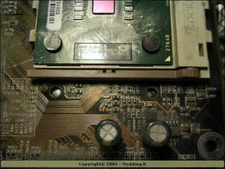 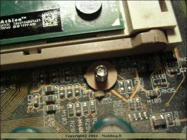 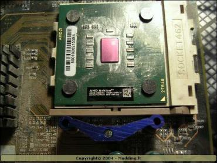 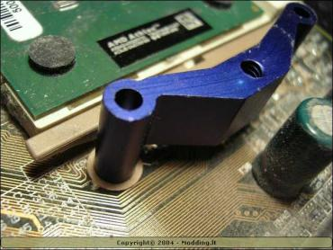 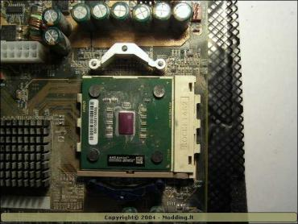 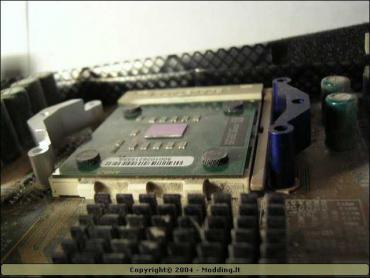 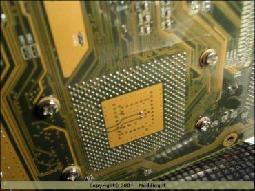 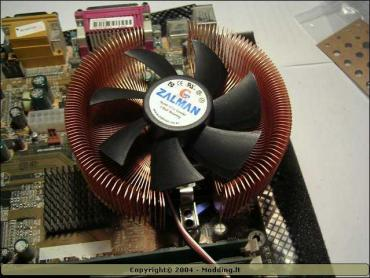 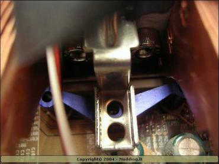 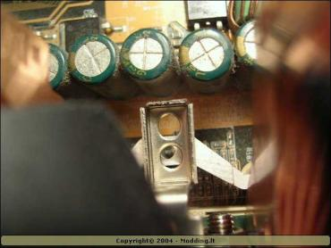 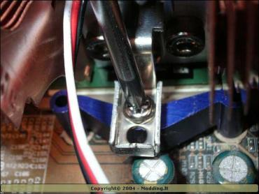 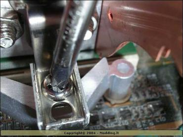
Testai
Kaip sakoma, atėjo ekstremalių išbandymų metas :) Jei rimtai, tai štai mano kompiuterio konfigūracija:
- Mainboard - DFI AD70-PRO
- CPU - AMD AlthonXP 2400+ @ 2000MHz
- RAM - PQi DDR 2x256 MB 266MHz
- HDD - Seagate Barracuda 40 GB 7200rpm + Seagate Barracuda 120 GB 7200rpm
- Video - ATI Radeon 7500 64 MB VIVO
- DVD+/-RW - LiteON DVD+/-RW 8x4x8x12x SOHW-812S
- CD-RW - Teac 52x24x52x
- Sound - Creative Live 4.1
- Lan - SMC EZ Card 10/100 (SMC1255TX)
- Monitor - LG Flatron 700P
- Keyboard - Chicony KB - 9885
- Mouse - Microsoft Wireless IntelliMouse Exploter 2.0
- PSU - ACC 300w (sleeved)
- OS - Windows 2000 SP4
O dabar norėčiau papasakoti kaip buvo testuojama:
1. Idle būsena: kompiuteris buvo paliekamas likimo valei geram pusvalandžiui (su kiekvienu aušintuvu), kol pilnai stabilizuodavosi CPU temperatūra. Kambaryje buvo palaikoma pastovi 25C temperatūra, imituojanti kompiuterio korpuso vidine temperatūrą. Nebuvo naudojami jokie papildomi aušintuvai.
2. Load (stressed) būsena: kompiuteris geras 20 min. (su kiekvienu aušintuvu) buvo kankinamas sintetiniais tokiais, kaip PCMark 2001, 3DMark 2001, SiSandra, SuperPI, Prime95 ir kt. Dažniausiai šios programos buvo leidžiavos vienu metu, siekiant kuo labiau apkrauti procesorių. Kambario temperatūra buvo tokia pati, kaip ir idle būsenos metu. Jokie papildomi aušintuvai nebuvo naudojami..
Na bet užteks teorijos, greičiau prie rezultatų :)
Spire WhisperRock IV Idle
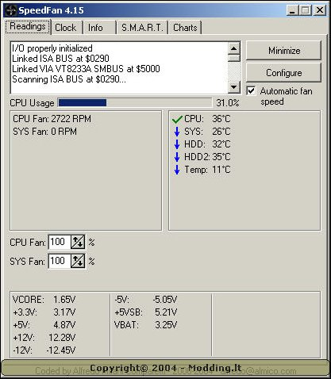
Spire WhisperRock IV Load
Zalman CNPS6000-Cu Idle (min. RPM)
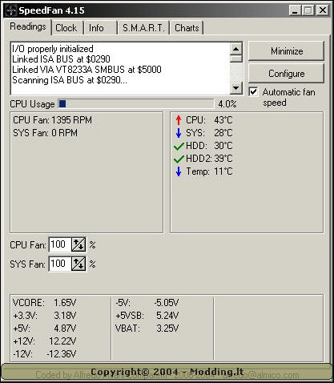
Zalman CNPS6000-Cu Idle (max. RPM)
Zalman CNPS6000-Cu Load (min. RPM)
Zalman CNPS6000-Cu Load (max. RPM)

Zalman CNPS7000B-Cu (min. RPM)
Zalman CNPS7000B-Cu (max. RPM)
Zalman CNPS7000B-Cu (min. RPM)
Zalman CNPS7000B-Cu (max. RPM)
Išvados ir rezultatai
Manau, iš temperatūrų grafiko pilnai turėjo būti aišku, kuris iš Zalmanų efektyvesnis ir, kad mano senasis Spire WhisperRock 4 beveik niekam tikęs :) Bet abu šie aušintuvai (turiu omenyje Zalmanus) turi savų pliusų ir minusų. Apžvelgsiu juos atskirai:
Zalman CNPS6000-Cu
Pliusai:
- Novatoriškas dizainas
- Įdomus aušintuvo išdėstymo sprendimas
- Pakankamai tylus
- Tinka Althon XP ir Intel P4
- Palyginus, nesudėtingas montavimas
- Į komplektą įeina apsukų reguliatorius (Fan Mate) ir termo pasta
Minusai:
- Kaina (118 Lt iš Infomegos)
- Per mažas aušinimo efektyvumas (už tokią kaina, galėtų aušinti ir geriau)
- Dydis (telpa ne į visus korpusus)
- Svoris (462g yra labai arti Socket A ir 370 maksimumo)
- Aušintuvo apsukų reguliatoriaus rankenėlė yra žymiai per maža
Susumavęs visus pliusus ir minusus, produktui suteikiu 7 balus iš galimų 10!
Zalman CNPS7000B-Cu
Pliusai:
- Novatoriškas dizainas
- Labai tylūs
- Nuostabiai aušina
- Patogus montavimas
- Suderinamumas su Socket 478 / A / 754 / 939 / 940
- Detalus ir gerai parašytas manualas
- Pagerintos aušintuvo apsukų reguliatoriaus charakteristikos (ilgesnis laidas ir patogesnė rankenėle)
- Į komplektą įeina Zalman firminis lipdukas (kai kurie moderiai juos renka)
Minusai:
- Kaina (150 Lt iš Infomegos)
- Dydis (telpa ne į visus korpusus)
- Svoris (773g svoris yra labai pavojingas šiuolaikinėm motininėm plokštėm)
Susumavęs visus pliusus ir minusus, produktui suteikiu 9.5 balus iš galimų 10!
Taigi ilgai lauktas verdiktas: Jei jau ruošiatės pirkti vieną iš šių Zalman aušintuvų ir galite sau liesti išleisti papildomus 40Lt, pirkite tik CNPS7000B-Cu modelį. Jis visais aspektais yra žymiai geresnis už savo jaunesnįjį "broliuką" ir tikrai yra vertas už jį sumokėtų pinigų.
Kaip bebūtų gaila, aš negaliu jūsų visiškai įtikinti, todėl paskutinis žodis buvo, yra ir liks tik jūsų. Prieš perkant kurį nors aušintuvą, rekomenduoju perskaityti apšatymą dar kartą ir truputėli "pagooglint" :)
Padėka ir HappyEnd
Modding.lt komanda nuoširdžiai dėkoja Olegui iš UAB "Infomega ir ko", įsikūrusiai Vilniuje Švitrigailos g. 3, už mūsų apžvalgai maloniai suteiktus nuostabius produktus.
Beje, jei norėsite pakomentuoti mano straipsnį arba pareikšti savo nuomonę, apsilankykite Modding.lt forume.


{kind=link}
{kind=link}
{kind=link}
{kind=link}
{kind=link}
{kind=link}
{kind=link}
{kind=link}
{kind=link}
{kind=link}
{kind=link}
{kind=link}
{kind=link}
{kind=link}
{kind=link}
{kind=link}
{kind=link}
{kind=link}
{kind=link}
{kind=link}
{kind=link}
{kind=link}
{kind=link}
{kind=link}
{kind=link}
{kind=link}
{kind=link}
{kind=link}
{kind=link}
{kind=link}
{kind=link}
{kind=link}
{kind=link}
{kind=link}
{kind=link}
{kind=link}
{kind=link}
{kind=link}
{kind=link}
{kind=link}
{kind=link}
{kind=link}
{kind=link}
{kind=link}
{kind=link}
{kind=link}
{kind=link}
{kind=link}